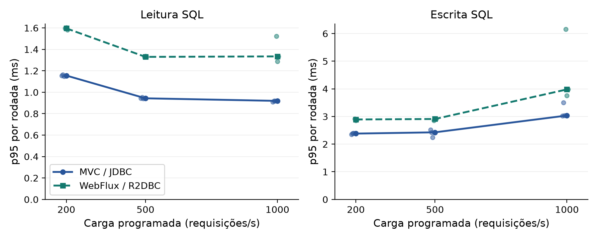
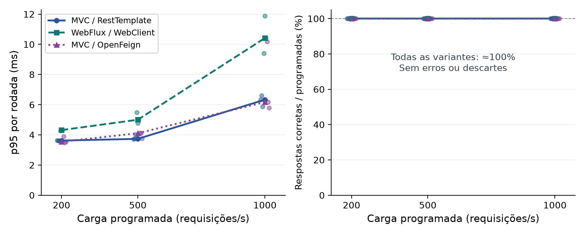
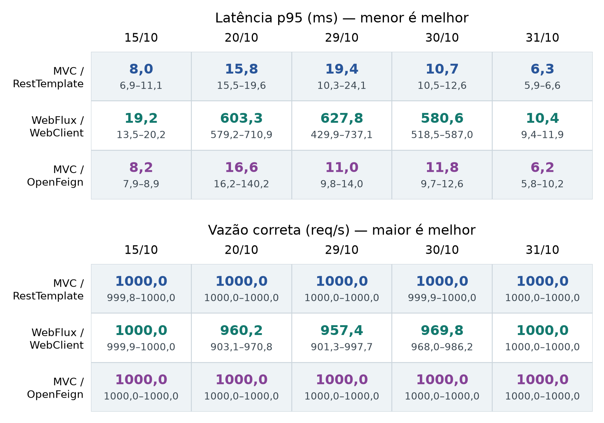
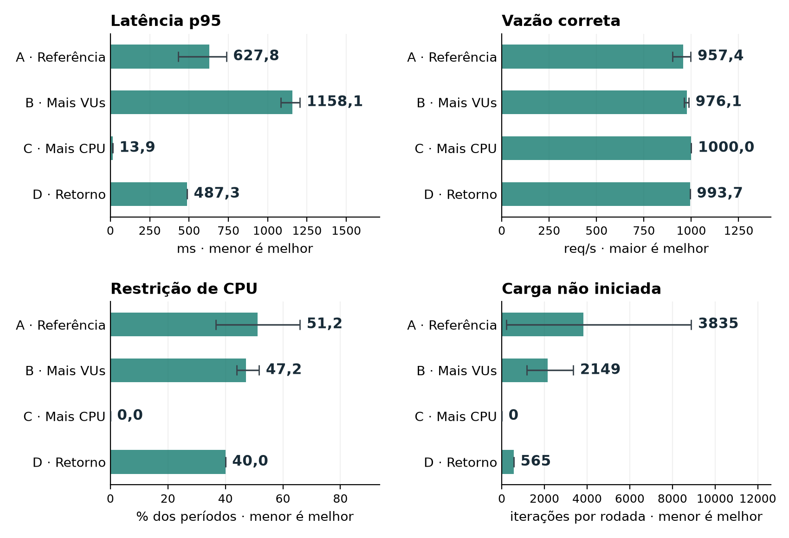
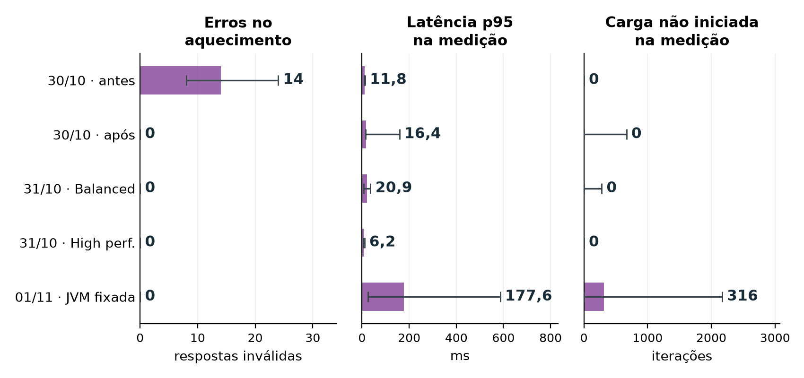
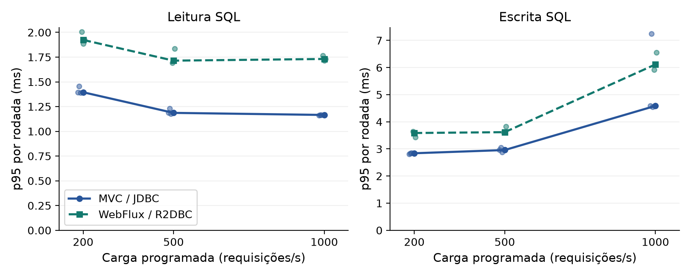
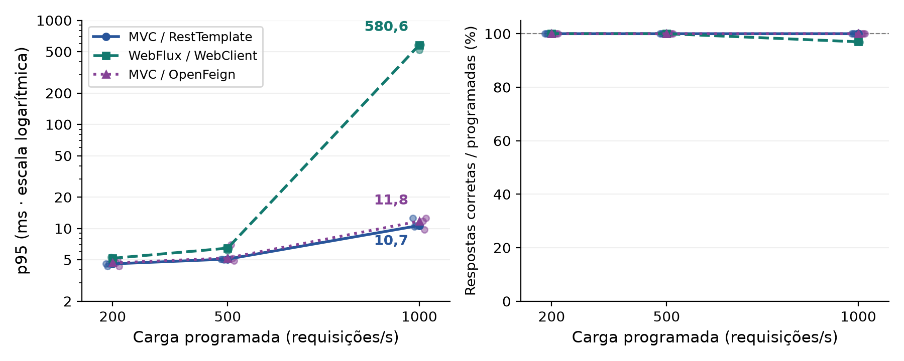

Versão com leitura ampliada: linhas nas comparações por carga; quadro numérico nas sessões; barras nos diagnósticos. Valores em negrito são medianas. Mínimo–máximo mostra a variação entre rodadas, não um intervalo de confiança.
Como os gráficos são feitos: Python e Matplotlib leem os resultados preservados das suas execuções. Nenhum valor é desenhado manualmente. Ver código, origem dos dados e comando para reproduzir.
Revisão de 01/11/2026. As Figuras 1 e 2 usam a coleta completa revisada de 31/10. As demais distinguem histórico e validações. Clique para abrir a imagem em resolução completa.
Artigo PDF · Novos resultados CSV · Dados das figuras · Suplemento
Linhas e marcadores: medianas; pontos menores: três repetições, deslocadas horizontalmente para leitura. Cargas em escala numérica. Segmentos guiam a leitura; cargas intermediárias não foram medidas.

Linhas e marcadores: medianas; pontos menores: três repetições. Segmentos guiam a leitura, sem medições intermediárias. Entrega próxima a 100% faz as linhas se sobreporem no painel direito; não significa capacidade máxima.

Cada célula mostra a mediana em negrito e o mínimo–máximo abaixo (n = 3). Colunas: sessões distintas; não são uma curva temporal controlada. Feign, JVM e plano de energia mudaram entre coletas. WebFlux teve descartes em 20, 29 e 30/10.

Barras e números: medianas; hastes: mínimo–máximo, não intervalo de confiança. A: 2 CPUs/500 VUs; B: 2 CPUs/1.000 VUs; C: 4 CPUs/500 VUs (n = 3 em A–C). D: retorno a 2 CPUs/500 VUs (n = 1). ActiveProcessorCount=2 permanece fixo. Restrição é percentual de períodos, não tempo perdido.

Barras e números: medianas de três repetições; hastes: mínimo–máximo. Antes/após referem-se à inicialização dos conversores. Zero erros não significa ausência de descartes. Planos de energia e JVM diferem entre lotes; nenhuma ligação entre condições é presumida.

Três repetições por condição. Linhas ligam medianas; pontos menores são rodadas. Segmentos apenas guiam a leitura. Não misture esta sessão com a de 31/10.

A latência usa escala logarítmica, indicada no eixo, para permitir a leitura conjunta de valores de cerca de 5 a 600 ms. Três repetições por condição. Linhas ligam medianas; pontos menores são rodadas. Segmentos apenas guiam a leitura. Não misture esta sessão com a de 31/10.
